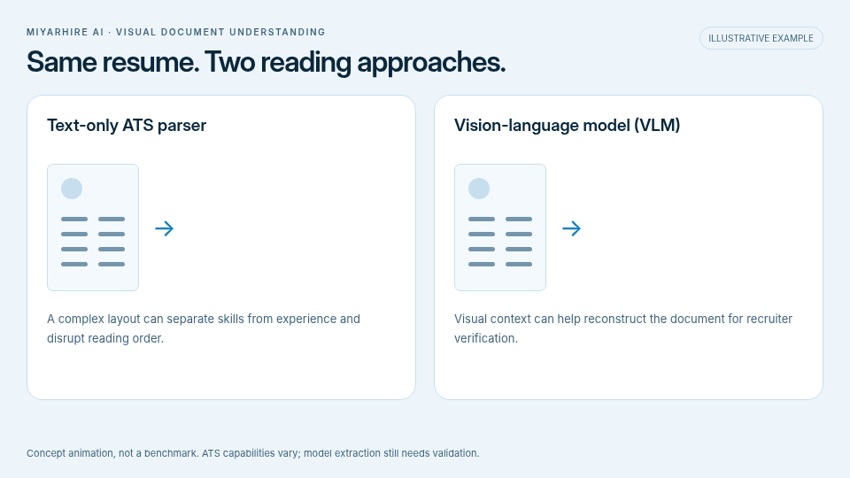
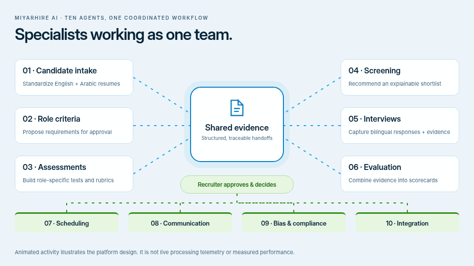
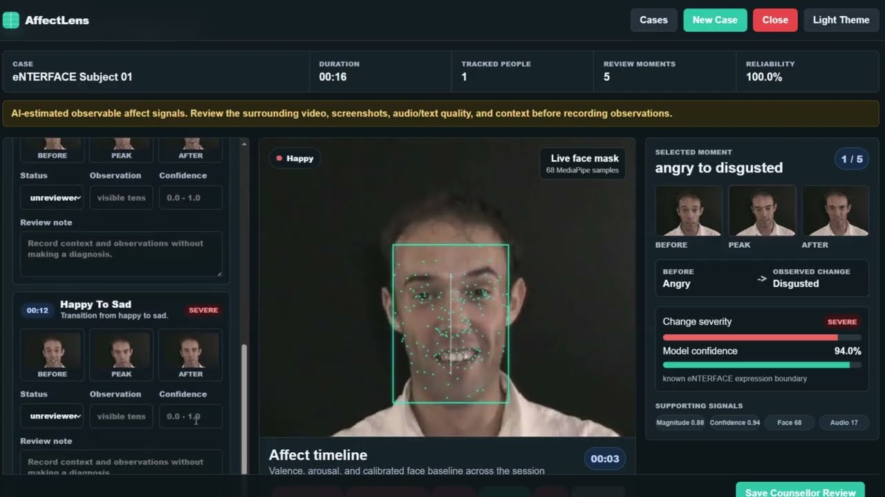
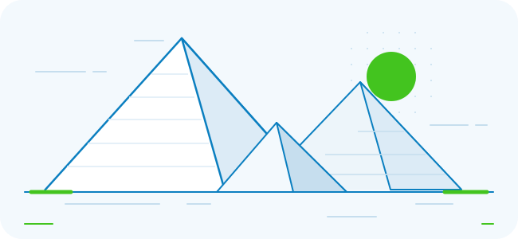

Candidate Intake & Standardization
Parse English and Arabic resumes; structure records and flag missing data or duplicates.
THE NEXT CHAPTER OF HIRING
Specialized AI agents connect the entire hiring journey — from the first application to an evidence-linked scorecard. In English and Arabic.
مِعيار للتوظيف بالذكاء الاصطناعي
The problemThe biggest problem in hiring today is placing the right person in the right job. A text-only ATS reads keywords on a page, so strong candidates are filtered out and weak ones pass through.
Our solutionMiyarHire AI reads the candidate visually, by voice, and by meaning — resume layout and content, a structured spoken interview, and semantic match to the job description — at speed, on the same criteria for everyone, with every score linked to its evidence.
THE NEXT CHAPTER OF HIRING
01 / THE CHALLENGE
High application volumes, mixed formats, and language barriers make manual hiring slow and inconsistent.
Designed to reduce repetitive work while preserving professional judgment.
01 / THE CHALLENGE

Text-only ATS parserA complex layout can break reading order and separate skills from experience.
Vision-language model (VLM)Visual context can help reconstruct the document for recruiter verification.
01 / THE CHALLENGE
01 / THE CHALLENGE
02 / PLATFORM DESIGN
Eight steps from a job description
to a recorded hiring decision.
Upload the job description and candidate applications.
Structure candidate data and propose job-specific criteria.
Recruiter reviews weights, requirements, and knockout rules.
Candidates complete a relevant assessment when required.
02 / PLATFORM DESIGN
Present an evidence-backed shortlist for human review.
Selected candidates interview in English or Arabic.
Bring the evidence into a comparative recruiter scorecard.
The recruiter makes and records the final hiring decision.
03 / THE AGENT ARCHITECTURE

Shared evidenceSix specialists exchange structured outputs. Four supporting agents coordinate the work.
Recruiter approves & decidesEvery handoff stays traceable for the people making the decision.
03 / THE AGENT ARCHITECTURE
Parse English and Arabic resumes; structure records and flag missing data or duplicates.
Define must-have, preferred, and knockout criteria, with weights for recruiter approval.
Create role-specific questions, difficulty levels, and consistent scoring rubrics.
03 / THE AGENT ARCHITECTURE
Evaluate role fit and recommend a shortlist with clear reasons for human review.
Conduct structured bilingual interviews and retain responses, transcripts, and evidence.
Combine screening, tests, and interviews into comparative candidate scorecards.
03 / THE AGENT ARCHITECTURE
04 / ASSESSMENT DESIGN
The job description shapes the questions, difficulty, and scoring framework — with recruiter approval before use.
Technical, behavioral, language, and situational assessments matched to the position.
The described workflow includes proportionate integrity checks, with anomalies flagged for a person to review.
Alternative formats and accommodations support candidates who need a different way to participate.
04 / ASSESSMENT DESIGN
Role · skills · experience level
EVALUATION FRAMEWORK
Questions + consistent scoring rubric
English + Arabic05 / THE CANDIDATE EXPERIENCE
*Text, voice, and video are described in the platform design; video support is also a Phase 4 roadmap item. No emotion or personality inference from faces, accents, or voices.
05 / THE CANDIDATE EXPERIENCE
English and Arabic support, including right-to-left candidate interfaces.
Role-specific questions and approved rubrics, with language quality evaluated separately.
Answer clarity, evidence depth, cross-source consistency, and language proficiency.
06 / EXPLAINABLE EVALUATION
One approved framework connects resume, assessment, and interview evidence.
Skills, experience, education, and languages.
Role-specific responses and rubric-based results.
Answers, transcript segments, and demonstrated performance.
06 / EXPLAINABLE EVALUATION
07 / RESPONSIBLE AI DESIGN
Recruiters approve criteria, questions, weights, and knockout rules. People review shortlisting, rejection, and final selection.
Scores point to job-relevant evidence. Versioned criteria, agent outputs, and human approvals support an audit trail.
Job-related performance only. No emotion, personality, or character inference from faces, accents, or voices.
07 / RESPONSIBLE AI DESIGN
Consent, data minimization, encryption, role-based access, and retention limits are part of the proposed safeguards.
Review language quality and scoring consistency. Offer accessible alternatives, clarification, and human review.
These are design safeguards. Legal, HR, and data-protection specialists should confirm the final workflow before production deployment.
08 / THE CUSTOMER
Teams processing high application volumes and repeatable hiring needs.
Recruiters managing several roles, clients, and candidate pools.
Organizations hiring across English- and Arabic-speaking markets.
08 / THE CUSTOMER
09 / BUSINESS MODEL
A proposed model aligned with recruiter seats, hiring volume, and enterprise needs.
Monthly or annual software plans.
Pricing tied to completed hiring activities.
09 / BUSINESS MODEL
Deployment and support for larger organizations.
Workspaces for recruitment providers.
09 / BUSINESS MODEL
Currently pre-revenue and in R&D.
Pricing and packaging remain to be confirmed.
10 / WHERE WE ARE
The prototype is not yet publicly or commercially available.
10 / WHERE WE ARE

2:30This deck is open as a local file, so the demonstration opens on YouTube in a new tab. Serve this folder over http to play it inside the slide.
Three signals, one timelineVoice audio, 68 facial landmark samples, and speech text compared in embedding space.
A label and a confidenceEvery second of the recording carries its own reading, so review moments can be found and replayed.
A person records the observationThe build presents estimated signals for review. It never writes the conclusion itself.
Stage one delivers the video, audio, and speech-text analysis engine. Candidate evaluation stays job-related: MiyarHire does not infer emotion, personality, or character from faces, accents, or voices. The demonstration plays from YouTube and needs an internet connection.
10 / WHERE WE ARE
Applied AI & LLM Engineer · Manchester, UK
MSc Artificial Intelligence with Distinction, University of Salford. Experience building agentic AI, RAG systems, multilingual interview tools, and production applications.
10 / WHERE WE ARE
11 / THE DEVELOPMENT ROADMAP
Five planned phases.
Target dates to be confirmed.
English/Arabic resume parsing, job criteria, and recruiter dashboard.
Assessment creation, explainable screening, and human-approved shortlisting.
Text and voice, transcripts, scheduling, and communication.
11 / THE DEVELOPMENT ROADMAP
Video support, comparative scorecards, ATS integrations, and analytics.
Independent fairness and security evaluation, pilots, and more languages.
Roadmap phases describe the development plan, not verified completion status. Pilot baselines and targets are still to be confirmed.
11 / THE DEVELOPMENT ROADMAP
12 / KEMET-X 2026
Kemet-X, powered by Career 180, brings founders, investors, innovators, and ecosystem leaders to the Pyramids of Giza.
12 / KEMET-X 2026

International investors
Countries represented
Grant opportunity
Event figures are from the organizer’s email. Selected startups may pitch internationally and have a chance to win the grant; selection and funding are not guaranteed.
13 / LET’S BUILD WHAT COMES NEXT
Pilot customersEmployers hiring at scale in English and Arabic.
HR & recruitment expertisePartners to validate workflows and evaluation rubrics.
Technology partnersATS, calendar, communications, and assessment integrations.
Investment or grant supportProduct development, evaluation, compliance readiness, and market entry. Amount to be confirmed.
13 / LET’S BUILD WHAT COMES NEXT
The evidence is connected. The decision stays human.
مِعيار